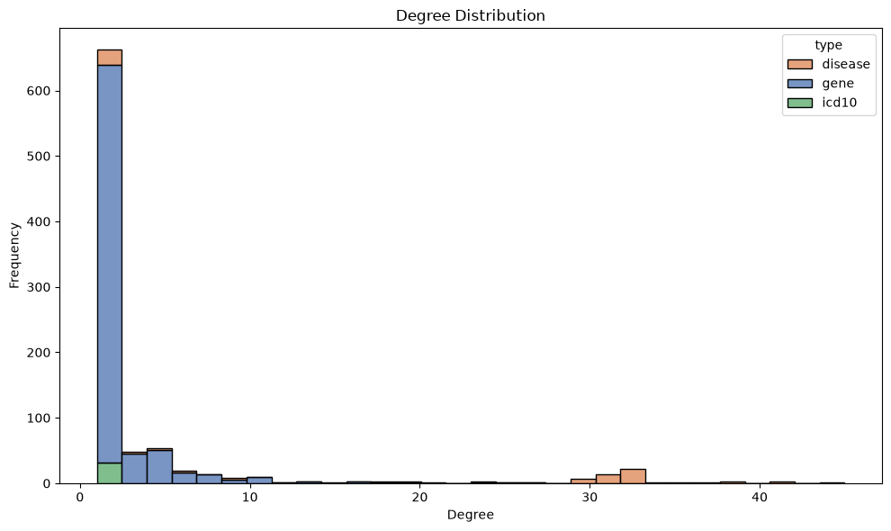
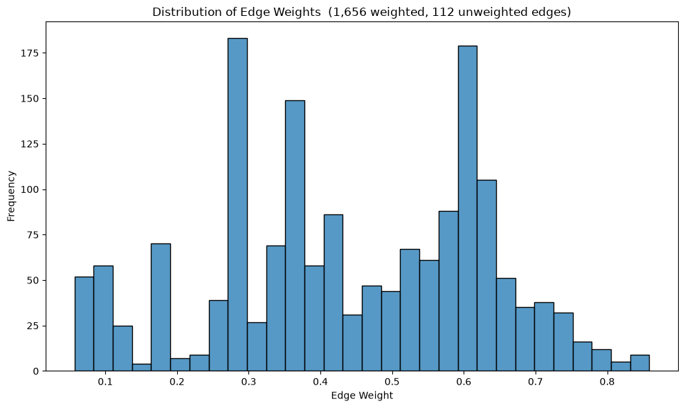
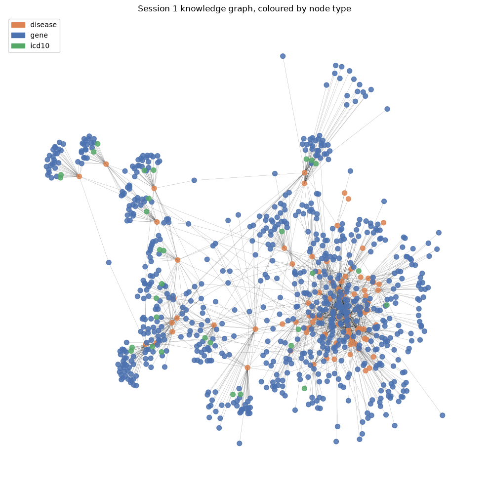
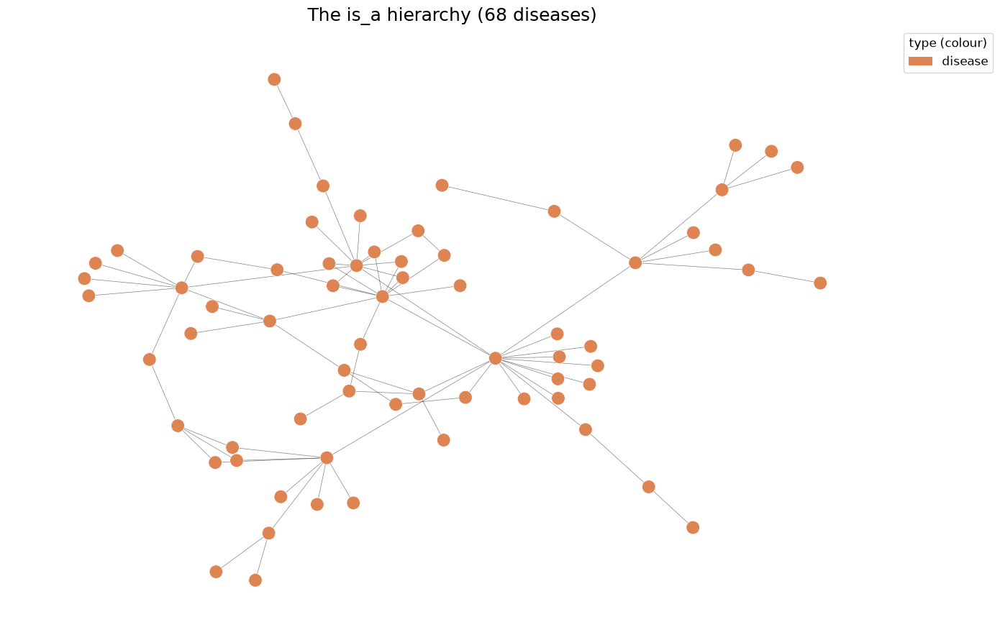

Part 2 — Building a Knowledge Graph with NetworkX#
In Part 1 we looked at the CSVs. Here we turn them into a graph, and then spend most of the notebook asking what shape that graph is — because the shape tells us a great deal about how the underlying data was assembled, and therefore what questions it can honestly answer.
Learning objectives#
By the end of this notebook we will be able to:
Build a typed, attributed graph from node and edge tables.
Read a graph summary and know which numbers are meaningful.
Interpret a degree distribution, and explain what a hub does and does not mean.
Explain what an Open Targets association score is and how to threshold it.
Visualise a graph coloured by node type.
Recognise annotation sparsity — the absence of an edge that should exist.
1. Imports#
# ── Imports ──────────────────────────────────────────────────────────────────
import pandas as pd
import networkx as nx
import matplotlib.pyplot as plt
# ── Custom Imports ───────────────────────────────────────────────────────────
# s1_helpers holds the plotting and graph utilities for this session. Most are
# adapted from earlier co-expression network material, keeping the same names.
import s1_helpers as h
---------------------------------------------------------------------------
ModuleNotFoundError Traceback (most recent call last)
Cell In[1], line 9
5
6 # ── Custom Imports ───────────────────────────────────────────────────────────
7 # s1_helpers holds the plotting and graph utilities for this session. Most are
8 # adapted from earlier co-expression network material, keeping the same names.
----> 9 import s1_helpers as h
ModuleNotFoundError: No module named 's1_helpers'
2. Building the graph, explicitly#
s1_helpers.load_kg() does this in one line, but it is worth writing out once so
that nothing is magic. A knowledge graph is just a loop over two tables.
nodes = pd.read_csv("../../data/session-1-data/kg_nodes.csv")
edges = pd.read_csv("../../data/session-1-data/kg_edges.csv")
G = nx.Graph()
# --- Nodes: the id becomes the key, everything else becomes an attribute ---
for row in nodes.itertuples(index=False):
G.add_node(
row.id,
type=row.type, # gene / disease / icd10
name=row.name if pd.notna(row.name) else row.id, # human-readable label
extra=row.extra if pd.notna(row.extra) else "",
)
print(f"{G.number_of_nodes():,} nodes added")
# --- Edges: source, target, and whatever provenance the row carries ---
for row in edges.itertuples(index=False):
attributes = {"type": row.type}
# Only association edges have a score and an evidence count. We deliberately
# do NOT fill in a 0 for the others: "no weight" and "weight of zero" are
# different statements, and conflating them breaks every weight plot later.
if pd.notna(row.weight):
attributes["weight"] = float(row.weight)
if pd.notna(row.evidence):
attributes["evidence"] = int(row.evidence)
G.add_edge(row.source, row.target, **attributes)
print(f"{G.number_of_edges():,} edges added")
1,768 edges added
Undirected, with the direction kept#
We are building an undirected graph, because degree and components behave more
intuitively that way. But is_a genuinely is directional, and an undirected graph
does not remember which way round an edge was added.
So the helper stamps the parent onto the edge explicitly. Without this, climbing the ontology in Part 3 would walk downwards on roughly half the edges, depending on NetworkX’s internal ordering — a bug that produces plausible-looking wrong answers rather than an error.
# From now on, use the helper - it does exactly the above, plus the parent stamp.
G = h.load_kg()
# Proof that the direction survived into an undirected graph:
example = ("MONDO_0005494", "MONDO_0006513") # TNBC is_a ER-negative breast cancer
print(G.edges[example])
print(f"\n child : {G.nodes['MONDO_0005494']['name']}")
print(f" parent: {G.nodes[G.edges[example]['parent']]['name']}")
{'type': 'is_a', 'parent': 'MONDO_0006513'}
child : triple-negative breast carcinoma
parent: estrogen-receptor negative breast cancer
3. What have we got?#
print_graph_info is the original summary function, extended to break the counts
down by type — on a typed graph the totals alone hide most of what matters.
h.print_graph_info(G)
Number of nodes: 881
Number of edges: 1768
Graph type: undirected
Nodes by type:
760 gene
90 disease
31 icd10
Edges by type:
1,656 associated_with
81 is_a
31 maps_to
Self-loops: 0
Graph density: 0.004561
Connected components: 1
Largest component: 881 nodes (100.0% of the graph)
Average clustering coefficient: 0.0137
Reading these numbers (click to expand)
Density 0.0046 — the graph is very sparse. Out of every 1,000 possible pairs of nodes, about 5 are connected. This is completely typical: real biological graphs are sparse, and dense ones are usually a sign that the threshold is too permissive.
1 connected component — everything is reachable from everything else. That is a property of how the graph was built (seeded from one disease and expanded), not a discovery about biology.
Average clustering 0.0137 — near zero, and this is the interesting one. Clustering measures how often a node’s neighbours are themselves connected. Here they almost never are, because the graph is close to bipartite: genes connect to diseases, diseases connect to genes, but genes rarely connect to genes. Remember this number — it is why the projection in Part 3 is necessary.
4. Degree: who is connected to what?#
h.plot_degree_distribution(G, by_type=True)

That distribution is dominated by a spike of low-degree genes and a long right tail. Let us see what is actually in the tail.
h.get_highest_degree_nodes(G, top_n=10)
| id | name | type | degree | |
|---|---|---|---|---|
| 0 | MONDO_0004989 | breast carcinoma | disease | 45 |
| 1 | MONDO_0004988 | breast adenocarcinoma | disease | 41 |
| 2 | MONDO_0006256 | invasive breast carcinoma | disease | 41 |
| 3 | MONDO_0004953 | invasive ductal breast carcinoma | disease | 38 |
| 4 | MONDO_0006116 | breast carcinoma by gene expression profile | disease | 38 |
| 5 | MONDO_0007254 | breast cancer | disease | 37 |
| 6 | MONDO_0005590 | breast ductal adenocarcinoma | disease | 35 |
| 7 | MONDO_0005494 | triple-negative breast carcinoma | disease | 34 |
| 8 | MONDO_0002486 | lobular neoplasia | disease | 33 |
| 9 | MONDO_0005023 | ductal breast carcinoma in situ | disease | 33 |
The hubs are all diseases — and that is a construction artefact#
This is the single most important habit to build today: when a graph tells us something, ask whether the data or the construction said it.
Here, the answer is construction. build_kg_data.py kept the top 30 genes per
disease. So every disease has at most 30 gene edges plus its is_a edges, while a
gene only gets an edge for each disease it happens to be top-30 in. Diseases were
always going to be the hubs.
Compare that to what a hub means in the inferred co-expression network we built in
Part 1 §7, where a hub gene really is a gene that correlates with unusually many
others. That is not free of artefacts either — its top hubs are CD4, PTPN22,
IL2RA and BTK, immune genes that track how much immune infiltrate each tumour
happens to contain. Both graphs have hubs; in each case the first question is what
put them there.
# Degree summarised by node type, which makes the asymmetry obvious.
degrees = pd.DataFrame(
[{"type": G.nodes[n]["type"], "degree": d} for n, d in G.degree()]
)
degrees.groupby("type")["degree"].describe()[["count", "mean", "50%", "max"]]
| count | mean | 50% | max | |
|---|---|---|---|---|
| type | ||||
| disease | 90.0 | 20.544444 | 30.0 | 45.0 |
| gene | 760.0 | 2.178947 | 1.0 | 27.0 |
| icd10 | 31.0 | 1.000000 | 1.0 | 1.0 |
So: max degree for a disease is capped near 30 + hierarchy edges by design,
and genes sit at a median of 2. Neither number is telling us about biology.
The genes with the highest degree, however, are interesting — they are the ones implicated across many different diseases.
# get_highest_degree_nodes on a gene-only subgraph would return all zeros, because
# genes never connect to genes. Degree has to be read off the full graph.
gene_degrees = pd.DataFrame(
[{"symbol": G.nodes[n]["name"], "degree": G.degree(n)}
for n in h.nodes_of_type(G, "gene")]
).sort_values("degree", ascending=False)
gene_degrees.head(10).to_string(index=False)
'symbol degree\n TP53 27\n ESR1 25\nPIK3CA 24\n BRCA2 19\n CDH1 18\n BRCA1 17\n PTEN 16\n ERBB2 16\n PALB2 13\n ATM 13'
TP53 and PIK3CA at the top are exactly what we would expect — the pan-cancer
genes, implicated across almost everything. Their high degree is real signal about
how broadly they have been studied.
ESR1 in second place is a different story. The estrogen receptor is not a
pan-cancer gene at all; it is here because 63 of this graph’s 90 diseases are
breast cancer subtypes, and ESR1 is attached to most of them. Its degree is
telling us about the shape of our disease set, not about biology.
Two genes at the top of the same list, for two completely different reasons. That is the habit worth building: read a ranking, then ask what would have to be true for it to mean what it appears to mean.
5. Edge weights: what is an association score?#
Open Targets computes an overall association score between 0 and 1 for each gene–disease pair. It is a weighted harmonic-sum aggregation across evidence types: genetic association, somatic mutation, known drugs, pathways, RNA expression, text mining, and animal models.
Two things follow from that, and both matter:
It is not a probability. A score of 0.8 does not mean 80% likely to be causal. It means “a lot of evidence of several kinds points here”.
It aggregates very different kinds of claim. A gene can score highly because it is genetically causal, or because a drug targeting it is used to treat the disease. Those are not the same relationship at all — we return to this in Part 3.
h.visualise_edge_weight_distribution(G)

Note the title: 1,656 edges carry a weight, 112 do not. The is_a and maps_to
edges are structural — asserting “this is a subtype of that” is not something we
attach a confidence score to in this dataset.
That asymmetry is a trap when sparsifying, which is the next section.
6. What kind of evidence?#
The association score has a second problem, and it is worse than the first.
It aggregates evidence types into one number, so a gene can score 0.98 because it is genetically causal, or because a drug hitting it treats the disease. Those are opposite kinds of claim and the overall score cannot tell them apart.
kg_evidence.csv keeps them apart. One row per (gene, disease, evidence type).
evidence = h.load_evidence()
print(f"{len(evidence):,} evidence rows for {G.number_of_edges():,} edges\n")
h.datatype_summary(evidence)
3,422 evidence rows for 1,768 edges
| datatype | edges | mean_score | means | |
|---|---|---|---|---|
| 0 | literature | 1086 | 0.436 | co-mentioned in publications (text mining) |
| 1 | known_drug | 653 | 0.731 | a drug hitting this target is used for the dis... |
| 2 | genetic_association | 625 | 0.679 | inherited variants linked to the disease (cause) |
| 3 | somatic_mutation | 569 | 0.528 | mutations acquired in the tumour (cause) |
| 4 | genetic_literature | 164 | 0.620 | genetic claims extracted from publications |
| 5 | rna_expression | 140 | 0.074 | the gene is differentially expressed in the di... |
| 6 | animal_model | 102 | 0.437 | a model organism with this gene disrupted show... |
| 7 | affected_pathway | 83 | 0.673 | the gene sits in a pathway implicated in the d... |
Read the means column carefully. Only genetic_association and
somatic_mutation assert that the gene has something to do with causing the
disease. known_drug asserts the opposite direction of relevance — that the gene
is a useful place to intervene. literature asserts only that a text-mining
pipeline saw the two mentioned together.
Here is the same edge, seen two ways:
breast_cancer = "MONDO_0007254"
symbols = {G.nodes[n]["name"]: n for n in h.nodes_of_type(G, "gene")}
for symbol in ["BRCA1", "TUBB"]:
print(f"--- {symbol} -> breast cancer, overall score "
f"{G.edges[symbols[symbol], breast_cancer]['weight']}")
print(h.evidence_for_pair(evidence, symbols[symbol], breast_cancer, G)
[["datatype", "weight", "means"]].to_string(index=False))
print()
--- BRCA1 -> breast cancer, overall score 0.8355
datatype weight means
literature 0.9886 co-mentioned in publications (text mining)
genetic_association 0.9754 inherited variants linked to the disease (cause)
genetic_literature 0.6083 genetic claims extracted from publications
--- TUBB -> breast cancer, overall score 0.6212
datatype weight means
known_drug 0.9869 a drug hitting this target is used for the disease (treatment)
literature 0.6869 co-mentioned in publications (text mining)
BRCA1 and TUBB have almost the same overall score. But BRCA1 scores through
genetic_association and has no drug evidence at all, while TUBB scores
through known_drug and has no genetic evidence at all.
One is a cause. The other is a treatment target. The overall score, which is what most people use, reports them identically. Hold onto that — it is the whole of Section B in Part 3.
7. Sparsification: turning a dial and watching the graph change#
SCORE_THRESHOLD and “top N genes per disease” were choices made when the data was
built. We can make them again here, on the edges we have.
total = sum(1 for _, _, d in G.edges(data=True) if "weight" in d)
for threshold in [0.0, 0.2, 0.4, 0.6, 0.8]:
sparse = h.threshold_sparsification(G, threshold)
weighted = sum(1 for _, _, d in sparse.edges(data=True) if "weight" in d)
print(f" score >= {threshold:.1f} {weighted:>5,} association edges kept "
f"({weighted / total:.0%})")
score >= 0.0 1,656 association edges kept (100%)
score >= 0.2 1,445 association edges kept (87%)
score >= 0.4 913 association edges kept (55%)
score >= 0.6 420 association edges kept (25%)
score >= 0.8 16 association edges kept (1%)
The trap#
threshold_sparsification keeps unweighted edges by default. Watch what happens
if it does not — this is the original behaviour, where a missing weight was read as 0:
kept = h.threshold_sparsification(G, 0.5, keep_unweighted=True)
dropped = h.threshold_sparsification(G, 0.5, keep_unweighted=False)
for label, graph in [("keep_unweighted=True ", kept), ("keep_unweighted=False", dropped)]:
n_isa = len(h.edges_of_type(graph, "is_a"))
n_map = len(h.edges_of_type(graph, "maps_to"))
print(f"{label} is_a: {n_isa:>3} maps_to: {n_map:>3} "
f"components: {nx.number_connected_components(graph)}")
keep_unweighted=True is_a: 81 maps_to: 31 components: 327
keep_unweighted=False is_a: 0 maps_to: 0 components: 415
Treating “no weight” as “weight 0” silently deletes the entire disease hierarchy and every ICD-10 link. The graph still loads, still draws, still has a sensible node count — and every ontology question we ask it afterwards returns nothing.
This is the characteristic knowledge-graph bug: it does not crash, it just quietly becomes a different graph.
8. Seeing it#
Layout algorithms on an 881-node graph produce a hairball. That is honest — it is a hairball — but colouring by type at least shows the structure.
h.visualise_graph(G, title="Session 1 knowledge graph, coloured by node type")

The blue genes form a fringe around a core of orange diseases, with the green ICD-10 nodes hanging off the edge. That picture is the bipartite structure the near-zero clustering coefficient predicted.
For a readable picture, take a subgraph. Here is the disease hierarchy on its own:
# The is_a backbone: diseases and the subtype relationships between them.
hierarchy = nx.Graph()
hierarchy.add_nodes_from((n, G.nodes[n]) for n in h.nodes_of_type(G, "disease"))
hierarchy.add_edges_from(h.edges_of_type(G, "is_a"))
hierarchy = h.clean_graph(hierarchy, degree_threshold=1, keep_largest_component=False)
h.draw_network_with_node_attrs(
hierarchy,
color_attr="type",
title=f"The is_a hierarchy ({hierarchy.number_of_nodes()} diseases)",
figsize=(14, 9),
node_size=180,
)

9. Annotation sparsity: the edges that should be there and are not#
We finish with the most important idea in the notebook.
build_kg_data.py asked Open Targets for 99 diseases: breast cancer, its 74
subtypes from the ontology, and 24 comparison diseases. The graph has 90. Nine
diseases vanished because they had no gene associations at all.
# The five PAM50 molecular subtypes used in Session 2 are all diseases in this graph.
subtypes = pd.DataFrame([
{
"PAM50 label": label,
"MONDO id": mondo_id,
"name in graph": G.nodes[mondo_id]["name"] if mondo_id in G else "ABSENT",
"genes": len(h.genes_for_disease(G, mondo_id)),
}
for label, mondo_id in h.PAM50_TO_MONDO.items()
])
subtypes
| PAM50 label | MONDO id | name in graph | genes | |
|---|---|---|---|---|
| 0 | LumA | MONDO_0021116 | luminal A breast carcinoma | 30 |
| 1 | LumB | MONDO_0021115 | luminal B breast carcinoma | 30 |
| 2 | Basal | MONDO_0004984 | basal-like breast carcinoma | 0 |
| 3 | Her2 | MONDO_0006244 | HER2 positive breast carcinoma | 30 |
| 4 | Normal | MONDO_0006324 | normal breast-like subtype of breast carcinoma | 19 |
Basal-like breast carcinoma has zero genes.
Basal-like disease is one of the most intensively studied breast cancer subtypes. It obviously has genes. So what happened?
Open Targets holds only 16 direct associations for that exact ontology term, and
the strongest scores 0.009 — below the 0.05 threshold used at build time. The
evidence exists, but it was filed against a neighbouring term: triple-negative breast carcinoma, which is clinically near-synonymous and has 34 edges in our graph.
tnbc = "MONDO_0005494" # triple-negative breast carcinoma
basal = "MONDO_0004984" # basal-like breast carcinoma
for node in (tnbc, basal):
print(f"{G.nodes[node]['name']:36s} degree={G.degree(node):>3} "
f"genes={len(h.genes_for_disease(G, node)):>3}")
triple-negative breast carcinoma degree= 34 genes= 30
basal-like breast carcinoma degree= 2 genes= 0
Why this is the lesson, not a footnote (click to expand)
Every knowledge graph we will ever use has this property. An edge is missing for one of three reasons and the graph does not tell us which:
The relationship does not exist. (genuine negative)
The relationship exists but nobody has studied it. (annotation gap)
The relationship exists, has been studied, and was recorded against a different but equivalent term. (vocabulary mismatch — what happened here)
Only the first is a finding. The other two are artefacts of curation, and they are
much more common. This is precisely why the is_a hierarchy matters: it lets us
recover from case 3 by asking about a parent term instead.
That recovery is what Part 3 does.
Exercise#
Find the diseases in the graph with the fewest gene associations, and decide for each whether it is a genuine negative or an annotation gap.
# TODO: count the genes attached to each disease and sort ascending
### YOUR CODE HERE ###
gene_counts.head(12).to_string(index=False)
Summary#
A knowledge graph is a loop over a node table and an edge table; nothing more.
Undirected is easier to analyse, but genuinely directional edges (
is_a) need their direction preserved as an attribute.Hubs here are diseases, because of how the data was cut — always ask whether a graph property came from the data or from the construction.
Association scores aggregate very different kinds of evidence into one number —
kg_evidence.csvseparates them, and the separation matters enormously.Thresholding a graph with mixed weighted and unweighted edges will silently delete the unweighted ones unless we are careful.
Annotation sparsity is the default state of biomedical knowledge graphs. A missing edge usually means nobody looked, or somebody used a different word.
Next: Part 3 puts this to work — starting from ICD-10 codes, recovering from the gaps, and finding which diseases share genes.